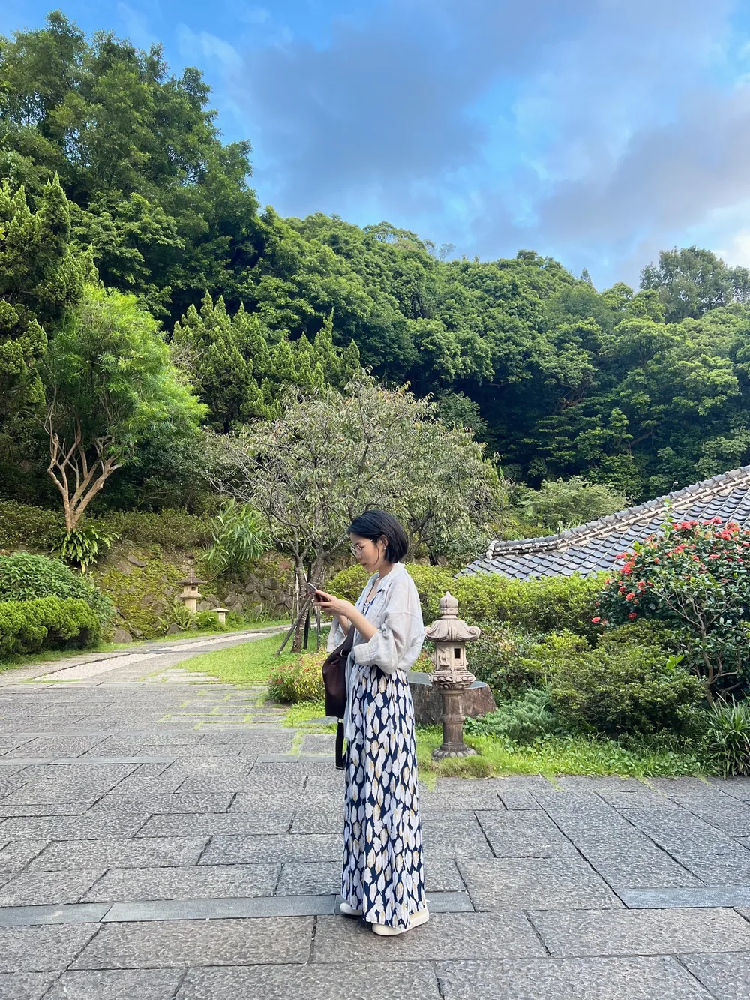

FROM DESIGN TO CONVERSATION
用色彩與對談，
看見不同的你
我用色彩、文字與對談，整理一個人的氣質與故事，讓原本就有的亮點被看見。
- 01
十多年的設計累積
從水晶飾品訂製開始，長期接觸色彩、材質與每個人的不同選擇。
- 02
與不同創作者合作
長期與身心靈老師、自由工作者、個人品牌、活動主辦人及社群主理人合作。
- 03
把感受整理成看得懂的內容
我習慣觀察一個人的語氣、溫度與故事，再透過美感與文字整理成容易理解、也能被記住的內容。
- 04
現在，用色彩打開故事
從選色與對談開始，整理人物金句與我看見你的角度，製作成可以收藏或分享的人物紀錄。